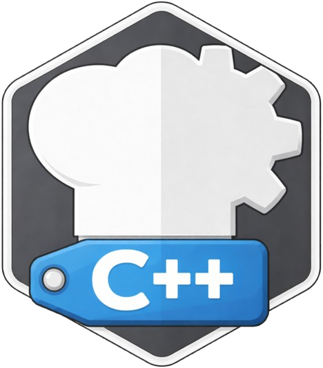

PROJECT

ZZX-LABS R&D // SOFTWARE // WEB MIRROR
CyberChefC++
High-performance C++ CyberChef primitives companion with local recipe validation, modern C++ pipeline/code generation, CMake target generation, test vectors, and browser-side timing for semantic regression checks.
C++ // NATIVE PIPELINES
CyberChefC++ Browser Workbench
RECIPESC++ CODEGENCMAKETEST VECTORS
This measures the browser reference implementation only; it is not a C++ benchmark.
REFERENCE MODE
Semantics first
Browser execution verifies recipe behavior; emitted C++20/CMake scaffolding targets the native implementation.